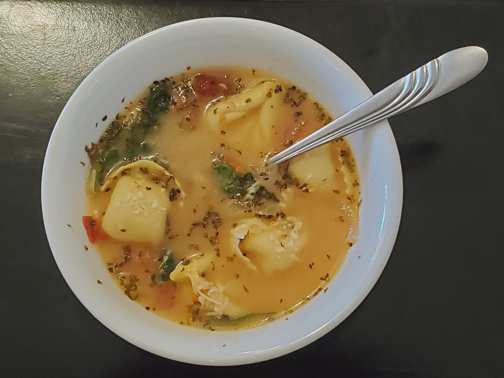

Creamy Tuscan Tortellini Soup
A tasty soup make it bla bla bla
Ingredients
- 2 Tbs Butter
- 1 small white onion (sliced)
- 3 cloves garlic (minced)
- 4 Cups Chicken broth
- 1 Large Can (~3.5 cups) diced tomatos
- 1 Can (~2 cups) white beans (drained)
- 1 Cup heavy cream
- 1/4 Cup Parmesan cheese
- 1 Tbsp Italian seasoning
- 1 Tsp Kosher Salt
- 1/2 Tsp Ground Pepper
- 2 Cups Chicken (Cooked and Shredded)
- 9 Ounce refrigerated tortellini
- 2 Cups Spinach (Chopped)
Melt the butter in a large pot at medium heat. Sautee garlic and onions until tender. Add tomatos, chicken broth, white beans, cream, and Parmesan.
Bring to a simmer. Add Italian seasoning, salt, and pepper. Add Chicken and tortellini, simmer for 10 min to allow the soup to thicken and the tortellini to cook.
Add spinach cook for 1 min. Serve hot and enjoy.